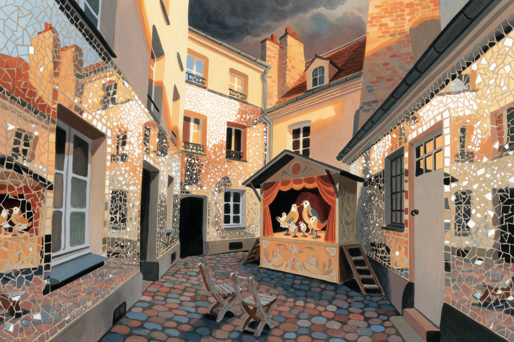

🎂 603 LATA · ŁÓDŹ
Zosia
Święto Miasta · weekend z tatą
Zosia
tramwajem
Rodzinny plan na 603. Urodziny Łodzi — sobota 25 i niedziela 26 lipca 2026.
Rodzinny plan na 603. Urodziny Łodzi — sobota 25 i niedziela 26 lipca 2026.

Woda, przekąski, czapka i krem z filtrem, zapasowe ubranie, koc piknikowy.
Łagiewnicka → Wycieczkowa przez Las Łagiewnicki → Skrzydlata. Ok. 10–12 min, ~2,5 km.
📍 Nawigacja: Skrzydlata 75 · Szmaragdowa RiwieraPlaża miejska na Szmaragdowej Riwierze. Zagroda z alpakami, malowanie buziek, brokatowe tatuaże, pokazy ratownictwa wodnego, mega chińczyk, dmuchaniec — a do tego plaża i las. Parking bywa pełny w dzień święta, dlatego jesteśmy wcześnie.
Las daje cień i trawę — dobry moment na lekki posiłek i wyciszenie.
Powolne kółko wokół wody — Zosia może zdrzemnąć się w wózku.
Pokazy, dmuchaniec, woda. Program animacji na miejscu trwa do 16:00.
Ta sama trasa autem, ~15 min. W domu ok. 17:00 — spokojny bufor przed obiadem.

~6–8 min pieszo na „Rondo Powstańców 1863 r."
Kierunek Widzew Augustów. Kursuje co ~12–20 min — jest darmowo, więc po prostu wsiadacie w najbliższy. Jazda ~15–18 min.
3 Rondo Powstańców → ZachodniaStąd ~7 min pieszo Legionów na wschód → Plac Wolności → góra Piotrkowskiej.
📍 Pasaż Róży, Piotrkowska 3Kameralne podwórko wyłożone lustrzaną mozaiką. Bez rezerwacji i bez biletów — bądźcie ~15 min wcześniej.
Teatr „Słuchaj Uchem", krótka forma dla najmłodszych. Jeśli Zosia wytrzyma nawet 10–15 min — i tak wygrana. Wychodzicie, kiedy ma dość.
Spacer z powrotem na Zachodnią, tramwaj 3 w stronę domu.
3 Zachodnia → Rondo PowstańcówJesteście z zapasem — i przed najgorszą częścią burzy.